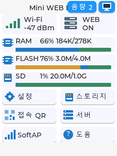

화면에서 Wi-Fi 설정
주변 공유기를 고르고 온보드 키보드로 접속 정보를 입력합니다.
화면을 보고, Wi-Fi를 고르고, QR로 접속하세요. 2.8인치 터치 디스플레이가 웹서버의 첫 연결을 더 직관적으로 만듭니다.
 ESP32-2432S028R ↗
ESP32-2432S028R ↗Wi-Fi와 서버 상태를 화면에서 확인하고, 내부 Flash와 SD 저장소를 살펴보세요. 휴대전화로 이어지는 QR 안내까지 보드 안에 담았습니다.

Wi-Fi와 서버 상태, RAM·Flash·SD 용량
주변 공유기를 고르고 온보드 키보드로 접속 정보를 입력합니다.
접속 안내 QR을 휴대전화로 읽어 보드 웹페이지로 이동합니다.
Flash와 SD 용량을 확인하고, 파일 목록을 화면에서 탐색합니다.
M1와 함께 그려보는 활용 아이디어.
화면에서 상태를 확인하고 QR로 안내를 공유하세요.
SD카드에 소개 페이지와 미디어를 준비하세요.
네트워크와 파일 저장소를 직접 보고 배워보세요.
| 기반 보드 | ESP32-2432S028R · ESP32 |
|---|---|
| 화면 | 2.8인치 · 프로젝트 UI 240×320 |
| 디스플레이 / 터치 | ILI9341 / XPT2046 저항막 방식 |
| 저장소 | 내부 Flash · microSD |
| 설정 인터페이스 | 온보드 키보드 · SoftAP 웹 설정 |
| 접속 안내 | 로컬 URL QR · 클라우드 중계 설정 지원 |
프로젝트 소스와 제조사 자료 기준. 기능의 실기기 동작 및 장시간 안정성 검증은 별도입니다. AI·인터넷 라디오 등 온라인 기능은 인터넷 연결과 해당 서비스 설정이 필요합니다.
모델에 맞는 펌웨어와
웹 콘텐츠를 준비하세요.
온보드 화면 또는 SoftAP 설정으로
같은 네트워크에 연결하세요.
안내된 주소를 휴대전화나
PC 브라우저에서 여세요.